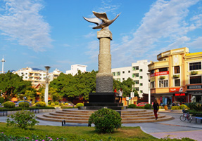

- 东侨概况
- 东侨由来 “四时多燠”（气候素有“万紫千红花不谢，冬暖夏凉四序春”美誉），故称东侨。
- 桃源由来“众水会于桃溪一源”，故名桃源。
- 政区位置 地处福建省东南部，晋江东溪上游。位于东经117°41′55″––118°31′9″，北纬25°13′15″––25°33′45″之间。东邻仙游，南接南安、安溪，西连漳平，北与德化、大田交界。
- 政区沿革 西周至春秋战国属七闽、闽越地，秦代属闽中郡。汉初属闽越国。汉元鼎五年废闽越，元封元年徙其民于江淮间，以其地属会稽郡。东汉建安初，属侯官县。三国吴永安三年属东安县...详情介绍>